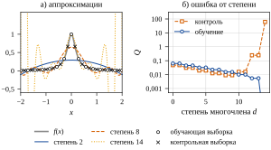
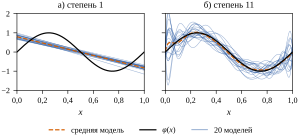
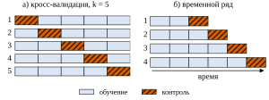

5 Переобучение и валидация
Метод наименьших квадратов находит параметры, при которых ошибка на обучающей выборке минимальна. Но модель строят ради прогнозов на новых объектах, и важна ошибка именно на них. Малая ошибка на обучающей выборке ещё не гарантирует малой ошибки на новых объектах. В этой главе показано, когда ошибка на обучающей выборке и ошибка на новых объектах расходятся, как оценить вторую из них и как по этой оценке выбрать модель.
5.1 Недообучение и переобучение
Рассмотрим пример К. Рунге. Функция f(x) = 1/(1 + 25x^2) задана таблично в \ell = 15 равноотстоящих точках отрезка [-2;\, 2]; это обучающая выборка. Аппроксимируем функцию многочленами степени d от 0 до 14, находя коэффициенты методом наименьших квадратов. Чтобы проверить качество каждого многочлена, нужны объекты, которых метод обучения не видел. Поэтому зададим ещё контрольную выборку — значения функции в 14 точках, лежащих посередине между обучающими. При поиске коэффициентов многочлена контрольные точки не используются: по ним только вычисляется ошибка уже обученной модели — так же, как модель будет ошибаться на новых объектах при применении. Шума в данных нет: ответы — точные значения функции. Пример показывает, как ведут себя ошибки на обучающей и контрольной выборках при усложнении модели.

Многочлен второй степени (рис. 5.1, а) слишком прост: он не может повторить острый пик функции и ошибается почти везде. Ошибка велика и на обучающей, и на контрольной выборке (Q \approx 0{,}045 и 0{,}031). Это недообучение: модель не улавливает закономерность.
С ростом степени обе ошибки сначала уменьшаются (рис. 5.1, б). Многочлен восьмой степени описывает функцию заметно лучше, ошибка на контроле минимальна, Q \approx 0{,}009. Дальше ошибка на обучающей выборке продолжает падать, а на контрольной — растёт. При d = 14 многочлен проходит через все 15 точек и ошибка на обучающей выборке равна нулю, но между точками, особенно у краёв отрезка, многочлен колеблется с огромной амплитудой, и ошибка на контроле достигает 61. Это переобучение: модель подогнана под обучающие объекты настолько точно, что на остальных объектах ошибается сильнее, чем более простая модель.
На графике заметны ещё две особенности. Ошибки не меняются при переходе от чётной степени к следующей нечётной: функция f чётная, и коэффициенты при нечётных степенях получаются нулевыми. При малых степенях ошибка на контроле чуть меньше, чем на обучении: наибольшая ошибка простых моделей — на вершине пика, в точке x = 0, а она входит в обучающую выборку.
Из примера следует, что ошибка на обучающей выборке с усложнением модели только уменьшается и поэтому не годится для выбора модели. Лучшую модель указывает ошибка на объектах, не участвовавших в обучении. Переобучение возникло здесь даже без шума — из-за лишней гибкости модели; при шумных ответах оно наступает ещё раньше, потому что гибкая модель повторяет и шум.
5.2 Обобщающая способность
Способность модели давать хорошие прогнозы на новых объектах называют обобщающей способностью. Её мера — риск, средняя потеря на всех возможных объектах (гл. 1). Риск вычислить нельзя, и ошибка на обучающей выборке — плохая замена ему. Она похожа на оценку за экзамен, вопросы которого студент знал заранее: метод обучения видел ответы на всех обучающих объектах и подогнал под них параметры, поэтому высокая точность на этих объектах ещё не говорит о качестве на других. Чем больше у модели параметров по сравнению с числом объектов, тем свободнее такая подгонка и тем сильнее ошибка на обучающей выборке расходится с риском. Для многочлена степени d = \ell - 1 в примере Рунге ошибка на обучающей выборке равна нулю, а на контрольной она огромна.
Переобучению способствуют:
- малое число объектов по сравнению с числом параметров;
- лишние или почти линейно зависимые признаки — как показано в гл. 3, при мультиколлинеарности веса подстраиваются под мелкие погрешности данных;
- шум в ответах, который гибкая модель принимает за закономерность.
Избавиться от переобучения полностью нельзя, но его можно уменьшить: собрать больше данных, выбрать модель попроще, ограничить величину параметров. Во всех случаях нужна надёжная оценка ошибки на новых данных — без неё нельзя понять, помогли ли эти меры. Схемы такой оценки описаны в разд. 5.4, а ограничение величины параметров (регуляризация) — в гл. 6.
5.3 Смещение и разброс
Откуда берётся ошибка модели на новом объекте? Для квадратичной потери её можно разложить на три слагаемых. Пусть ответ y = \varphi(x) + \varepsilon, где шум \varepsilon имеет среднее 0 и дисперсию \sigma^2. Обучающая выборка случайна: если собрать её заново, ответы будут другими из-за шума, и метод обучения выдаст другую модель g(x). Обозначим через \mathbb{E} математическое ожидание (среднее) по всем возможным обучающим выборкам и по шуму в ответе на новом объекте, а через \bar g(x) = \mathbb{E}\bigl(g(x)\bigr) — среднюю модель, прогноз в точке x, усреднённый по всем выборкам. Тогда для квадратичной ошибки в точке x
\mathbb{E}\Bigl(\bigl(y - g(x)\bigr)^2\Bigr) = \underbrace{\bigl(\varphi(x) - \bar g(x)\bigr)^2}_{\text{смещение}^2} + \underbrace{\mathbb{E}\Bigl(\bigl(g(x) - \bar g(x)\bigr)^2\Bigr)}_{\text{разброс}} + \underbrace{\sigma^2}_{\text{шум}}.\tag{5.1}
Вывод формулы. Запишем ошибку как сумму трёх частей: y - g = \varepsilon + (\varphi - \bar g) + (\bar g - g). При возведении в квадрат появляются квадраты частей и попарные произведения. Произведения обращаются в нуль при усреднении: шум \varepsilon на новом объекте не зависит от обучающей выборки и имеет среднее 0, а отклонение \bar g - g имеет среднее 0 по определению средней модели. Остаются три квадрата.
Читаем формулу. Смещение — насколько средняя модель отличается от истинной зависимости. Оно велико, когда модель слишком проста: прямая не повторит синусоиду, на скольких выборках её ни обучай. Разброс (дисперсия) — насколько модели, обученные на разных выборках, отличаются от средней модели. Он велик, когда модель гибкая и подстраивается под случайные особенности конкретной выборки. Шум — ошибка, которую не устранит никакая модель: часть ответа не определяется признаками. Недообучение — это большое смещение, переобучение — большой разброс.
Пример. Чтобы увидеть смещение и разброс, обучим модели на многих выборках. Пусть \varphi(x) = \sin 2\pi x, выборка — 15 равноотстоящих точек отрезка [0;\, 1] с шумом \sigma = 0{,}3. Сгенерируем 4000 выборок, на каждой построим многочлен степени d методом наименьших квадратов и вычислим слагаемые (5.1), усреднив их по отрезку (табл. 5.1). На рис. 5.2 показаны 20 из этих моделей.
| Степень d | Смещение² | Разброс | Шум | Ожидаемая ошибка |
|---|---|---|---|---|
| 1 | 0,210 | 0,011 | 0,09 | 0,311 |
| 3 | 0,006 | 0,021 | 0,09 | 0,116 |
| 11 | 0,000 | 0,154 | 0,09 | 0,244 |

Прямые (d = 1) почти совпадают друг с другом — разброс мал, — но все одинаково далеки от синусоиды: смещение велико. Многочлены степени 11 в среднем повторяют синусоиду — смещение почти нулевое, — но каждый по-своему колеблется вслед за шумом своей выборки: разброс велик. Многочлен третьей степени — компромисс, его ожидаемая ошибка наименьшая. С ростом сложности модели смещение убывает, а разброс растёт, поэтому ошибка на новых данных как функция сложности сначала падает, а потом растёт — как на рис. 5.1, б.
На практике слагаемые (5.1) не вычисляют: истинная зависимость неизвестна, а выборка одна. Разложение объясняет, как действуют меры против переобучения: больше данных — меньше разброс при том же смещении; более простая модель или ограничение параметров — меньше разброс ценой большего смещения.
5.4 Схемы валидации
Оценивать модель на тех же объектах, на которых она обучена, нельзя. Поэтому часть объектов откладывают и в обучении не используют. Все схемы ниже — способы такого разбиения.
Отложенная выборка (hold-out). Выборку делят на обучающую X^\ell и контрольную (тестовую) X^k, обычно в отношении от 70 : 30 до 80 : 20. Модель обучают на X^\ell, а оценкой риска служит эмпирический риск на X^k:
\mathrm{HO}(\mathcal{M}, X^\ell, X^k) = Q\bigl(\mathcal{M}(X^\ell), X^k\bigr).
Схема проста, но оценка зависит от того, какие объекты случайно попали в контроль, а часть данных не участвует в обучении.
Кросс-валидация (скользящий контроль, cross-validation). Выборку делят на k примерно равных блоков X_1, \ldots, X_k (здесь k — число блоков, а не размер тестовой выборки X^k). Каждый блок по очереди служит контрольным, а модель обучается на остальных k - 1 блоках (рис. 5.3, а). Оценка — средняя ошибка по всем блокам:
\mathrm{CV}(\mathcal{M}, X^\ell) = \frac{1}{k} \sum_{s=1}^{k} Q\bigl(\mathcal{M}(X^\ell \setminus X_s), X_s\bigr),
где X^\ell \setminus X_s — выборка без блока X_s. Обычно берут k = 5 или 10; отсюда название схемы — k-кратная кросс-валидация (k-fold). Каждый объект ровно один раз оказывается в контроле, поэтому оценка устойчивее, чем у отложенной выборки; плата — k обучений вместо одного. Кроме среднего, полезно смотреть на разброс ошибок по блокам: если две модели различаются меньше, чем меняется ошибка от блока к блоку, считать одну из них лучшей нельзя.

Крайний случай кросс-валидации — контроль по отдельным объектам (leave-one-out, LOO): k = \ell, каждый блок состоит из одного объекта. В среднем такая оценка почти совпадает с ошибкой модели, обученной на всей выборке, но требует \ell обучений и применяется на небольших выборках.
Стратификация. В задачах классификации блоки формируют так, чтобы доля каждого класса в них была такой же, как во всей выборке. Иначе при редком классе в какой-то блок могут не попасть его объекты, и ошибка на этом блоке ничего не скажет о качестве распознавания редкого класса.
Временные ряды. Если данные упорядочены во времени (продажи, нагрузка на сервис, история изменений кода), случайное разбиение даёт утечку: модель обучается на более поздних данных и проверяется на более ранних, то есть «знает будущее». Поэтому контрольный блок всегда берут позже обучающих (рис. 5.3, б): модель обучают на данных до некоторого момента и проверяют на следующем периоде, затем сдвигают границу. Так воспроизводится реальное применение: прогноз строится только по прошлому.
Обучающая, валидационная и тестовая выборки. Если по ошибке на контроле выбирают модель или гиперпараметры (например, степень многочлена), эта ошибка тоже становится заниженной: из многих вариантов выбран тот, которому повезло на контрольных объектах. Поэтому выборку делят на три части. На обучающей находят параметры. На валидационной (или кросс-валидацией внутри обучающей части) сравнивают модели и подбирают гиперпараметры. Тестовую откладывают до конца и используют один раз — для итоговой оценки выбранной модели. Если после взгляда на тестовую ошибку что-то меняют в модели, тестовая выборка превращается в валидационную, и ошибка на ней тоже становится заниженной.
5.5 Метрики качества регрессии
Эмпирический риск с квадратичной потерей — лишь одна из мер качества. Для регрессии используют несколько метрик; все они вычисляются по ответам y_i и прогнозам \hat y_i = g(x_i, \boldsymbol{\theta}) на объектах выборки, по которой оценивают модель (обычно контрольной); число этих объектов здесь обозначено \ell.
Среднеквадратичная ошибка (mean squared error) и корень из неё:
\mathrm{MSE} = \frac{1}{\ell} \sum_{i=1}^{\ell} (\hat y_i - y_i)^2, \qquad \mathrm{RMSE} = \sqrt{\mathrm{MSE}}.
MSE совпадает с эмпирическим риском МНК, дифференцируема и удобна для оптимизации, но сильно штрафует большие ошибки и чувствительна к выбросам. RMSE измеряется в тех же единицах, что и ответ (миллионы рублей, миллисекунды), поэтому её легче интерпретировать.
Средняя абсолютная ошибка (mean absolute error) и средняя абсолютная процентная ошибка (mean absolute percentage error):
\mathrm{MAE} = \frac{1}{\ell} \sum_{i=1}^{\ell} |\hat y_i - y_i|, \qquad \mathrm{MAPE} = \frac{100\,\%}{\ell} \sum_{i=1}^{\ell} \left| \frac{\hat y_i - y_i}{y_i} \right|.
MAE штрафует все ошибки пропорционально их величине и устойчивее к выбросам. MAPE выражает ошибку в процентах и не зависит от единиц измерения: ошибка 1 млн руб. для квартиры за 5 млн серьёзнее, чем для квартиры за 50 млн. Но при ответах, близких к нулю, MAPE теряет смысл — знаменатель почти нулевой.
Коэффициент детерминации сравнивает модель с простейшей — константой, равной среднему ответу \bar y:
R^2 = 1 - \frac{\sum\limits_{i=1}^{\ell} (\hat y_i - y_i)^2}{\sum\limits_{i=1}^{\ell} (y_i - \bar y)^2}.
Читаем формулу. Числитель дроби — сумма квадратов ошибок модели, знаменатель — сумма квадратов ошибок константной модели \hat y = \bar y. Если модель безошибочна, R^2 = 1; если она не лучше среднего, R^2 = 0. На обучающей выборке для линейной регрессии со свободным членом 0 \le R^2 \le 1: константа — частный случай линейной модели, и МНК не может найти решение хуже неё. На контрольной выборке R^2 бывает отрицательным: модель может ошибаться сильнее, чем среднее контрольных ответов.
Пример. Покажем, что R^2 на контроле может быть отрицательным. В гл. 3 по точкам (1; 1), (2; 3), (3; 2) построена модель g(x) = 1 + 0{,}5x. На этой обучающей выборке \bar y = 2, сумма квадратов ошибок модели равна 0{,}25 + 1 + 0{,}25 = 1{,}5, константы — 1 + 1 + 0 = 2, и R^2 = 1 - 1{,}5/2 = 0{,}25. Проверим модель на четырёх новых объектах (0; 2), (1; 2{,}5), (2; 1{,}5), (4; 2). Прогнозы — 1; 1,5; 2; 3, ошибки — -1; -1; 0{,}5; 1, сумма квадратов — 3,25. Среднее контрольных ответов равно 2, сумма квадратов отклонений от него — 0 + 0{,}25 + 0{,}25 + 0 = 0{,}5. Получаем R^2 = 1 - 3{,}25/0{,}5 = -5{,}5: на новых объектах ответы почти не меняются, и константа 2 предсказала бы их гораздо точнее, чем модель с наклоном.
Отсюда практическое правило: прежде чем строить сложную модель, вычисляют качество базовой модели (baseline) — прогноза средним или медианой ответа. Модель, которая на контрольной выборке не лучше базовой, бесполезна, как бы хорошо она ни выглядела на обучающей.
Информационные критерии. Иногда модели сравнивают без отложенной выборки — по ошибке на обучающей выборке со штрафом за число параметров. Для линейной регрессии с нормально распределённым шумом информационные критерии Акаике (AIC) и Шварца (BIC) с точностью до слагаемого, одинакового для всех моделей, записываются так:
\mathrm{AIC} = \ell \ln \mathrm{MSE} + 2(n + 1), \qquad \mathrm{BIC} = \ell \ln \mathrm{MSE} + (n + 1) \ln \ell,
где MSE вычислена на обучающей выборке, а n + 1 — число параметров модели. Меньшее значение критерия лучше. Первое слагаемое убывает с усложнением модели, второе — растёт. BIC при \ell > 7 (когда \ln \ell > 2) штрафует сложность сильнее и выбирает более простые модели.
5.6 Подбор гиперпараметров
Степень многочлена, набор признаков, скорость обучения градиентного спуска — гиперпараметры: их не находит метод обучения, а задаёт человек. Подбирают их перебором: для каждого набора значений обучают модель и оценивают её кросс-валидацией на обучающей части выборки, а затем выбирают набор с наименьшей ошибкой.
Поиск по сетке (grid search) перебирает все сочетания значений из заданных списков: например, степени 1, …, 10 и три способа масштабирования — 30 вариантов. Число вариантов растёт как произведение длин списков, и при нескольких гиперпараметрах перебор становится долгим. Случайный поиск (random search) проверяет заданное число случайных сочетаний. Обычно лишь немногие гиперпараметры сильно влияют на качество; при том же числе проверок случайный поиск пробует больше разных значений каждого из них и поэтому часто находит хорошее сочетание быстрее сетки [8]. Непрерывные гиперпараметры, такие как скорость обучения, перебирают в логарифмической шкале: 0,001; 0,01; 0,1.
В scikit-learn перебор с кросс-валидацией выполняет класс
GridSearchCV (листинг 5.1); случайный поиск —
RandomizedSearchCV. Всё, что вычисляется по данным, включая
стандартизацию, должно входить в конвейер: иначе статистики будут
посчитаны с участием контрольных блоков, и оценка окажется завышенной. В
scikit-learn метрики устроены так, что большее значение лучше, поэтому
MSE задаётся со знаком минус (neg_mean_squared_error).
Листинг 5.1. Выбор степени многочлена кросс-валидацией и итоговая оценка на тестовой выборке
from sklearn.linear_model import LinearRegression
from sklearn.metrics import mean_squared_error
from sklearn.model_selection import GridSearchCV
from sklearn.model_selection import train_test_split
from sklearn.pipeline import make_pipeline
from sklearn.preprocessing import PolynomialFeatures
from sklearn.preprocessing import StandardScaler
X_tr, X_te, y_tr, y_te = train_test_split(
X, y, test_size=0.2, random_state=0)
model = make_pipeline(StandardScaler(), PolynomialFeatures(),
LinearRegression())
search = GridSearchCV(
model, {"polynomialfeatures__degree": range(1, 11)},
cv=5, scoring="neg_mean_squared_error")
search.fit(X_tr, y_tr) # кросс-валидация на обучающей части
print(search.best_params_)
# тестовая выборка — один раз, в конце
y_pred = search.predict(X_te)
print(mean_squared_error(y_te, y_pred))После выбора гиперпараметров GridSearchCV заново обучает
лучшую модель на всей обучающей части; тестовая выборка в выборе не
участвует, поэтому ошибка на ней не занижена выбором модели.
Вопросы для самоконтроля
- Чем недообучение отличается от переобучения? Как каждое из них проявляется в ошибках на обучающей и контрольной выборках?
- Почему ошибка на обучающей выборке не годится для выбора степени многочлена?
- Что такое смещение и разброс? Как они меняются с ростом сложности модели?
- Почему увеличение обучающей выборки уменьшает переобучение?
- Чем кросс-валидация лучше отложенной выборки? Чем хуже?
- Почему для временных рядов нельзя разбивать выборку случайно?
- Зачем нужна тестовая выборка, если модель уже выбрана по валидационной?
- Может ли R^2 быть отрицательным? Что это означает?
Задачи
Ответы на трёх контрольных объектах равны 2, 4, 6, прогнозы модели — 3, 4, 8. Вычислите MSE, RMSE, MAE, MAPE и R^2.
Ответ
\mathrm{MSE} = 5/3 \approx 1{,}67; \mathrm{RMSE} \approx 1{,}29; \mathrm{MAE} = 1; \mathrm{MAPE} \approx 27{,}8\,\%; R^2 = 1 - 5/8 = 0{,}375.
Выборка из 1000 объектов, 10-кратная кросс-валидация. Сколько раз обучается модель и на скольких объектах каждый раз? Сколько обучений потребует LOO?
Ответ
10 раз по 900 объектов; LOO — 1000 обучений по 999 объектов.
Две модели на одной выборке из \ell = 100 объектов: у первой 3 параметра и MSE = 2,0, у второй 10 параметров и MSE = 1,8. Какую выберет AIC? BIC?
Ответ
AIC: 100 \ln 2 + 6 \approx 75{,}3 против 100 \ln 1{,}8 + 20 \approx 78{,}8 — первую; BIC штрафует сложность сильнее и тем более выберет первую.
Модель предсказания нагрузки на сервис по дням обучили и проверили 5-кратной кросс-валидацией со случайным разбиением, ошибка мала. После внедрения ошибка оказалась втрое больше. Назовите вероятную причину.
Ответ
утечка из будущего: для временного ряда нужно разбиение, при котором контроль всегда позже обучения.